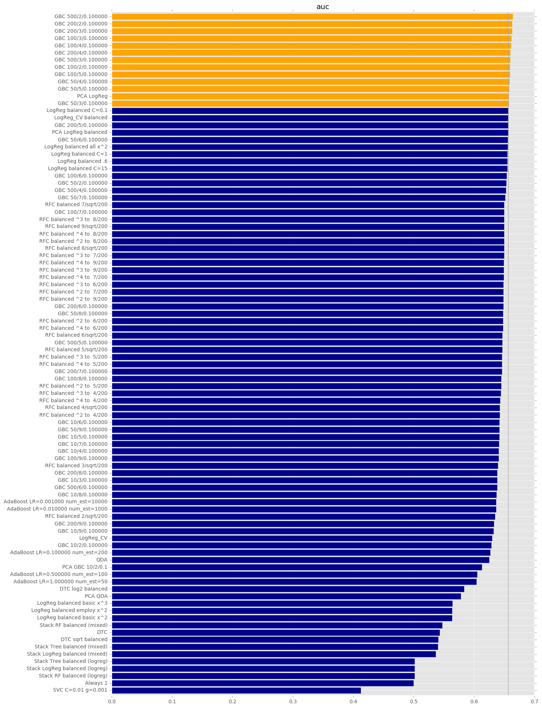
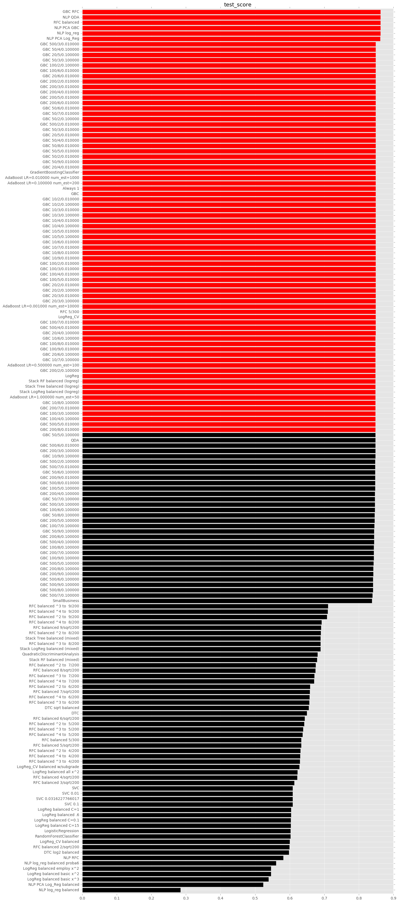
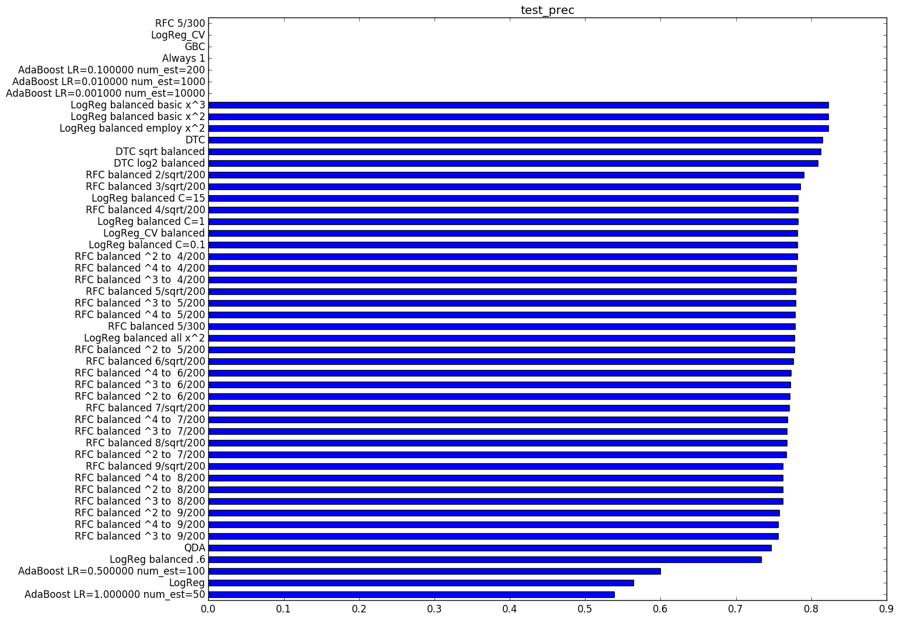

In this part, we will compare the models developed in the part 4 with each other. On the basis of the strongest model(s), we will look at the predictors that most influence results.
We will also explore how participants in the Lending Club ecology have varying criteria for success. For example, the Lending Club institution wishes to improve their grading algorithm and set interest rates commensurate with risk. An individual investor, by contrast, wishes to minimize the likelihood of default. Alternatively, an investor may wish to maximize their total return, taking into account that a default often follows a history of partial payments, thereby generating positive revenue. Choosing an appropriate loss function affects selection of the most successful model, which is the focus of this final report part.
| Model | auc | baseline | f1 | prec | score | test_f1 | test_prec | test_profit | test_score |
|---|---|---|---|---|---|---|---|---|---|
| AdaBoost LR=0.001000 num_est=10000 | 0.637 | 0.848 | 0.918 | nan | 0.848 | 0.000 | nan | -915.942 | 0.848 |
| AdaBoost LR=0.010000 num_est=1000 | 0.637 | 0.848 | 0.918 | nan | 0.848 | 0.000 | nan | -915.942 | 0.848 |
| AdaBoost LR=0.100000 num_est=200 | 0.627 | 0.848 | 0.918 | nan | 0.848 | 0.000 | nan | -915.942 | 0.848 |
| AdaBoost LR=0.500000 num_est=100 | 0.606 | 0.848 | 0.918 | nan | 0.848 | 0.001 | 0.600 | -914.986 | 0.848 |
| AdaBoost LR=1.000000 num_est=50 | 0.604 | 0.848 | 0.917 | 0.620 | 0.847 | 0.003 | 0.539 | -912.111 | 0.848 |
| Always 1 | 0.500 | 0.848 | 0.918 | nan | 0.848 | 0.000 | nan | -915.942 | 0.848 |
| GBC | 0.629 | 0.848 | 0.918 | nan | 0.848 | 0.000 | nan | -915.942 | 0.848 |
| LogReg | 0.657 | 0.848 | 0.918 | 0.556 | 0.848 | 0.002 | 0.564 | -913.453 | 0.848 |
| LogReg balanced .6 | 0.656 | 0.848 | 0.723 | 0.727 | 0.607 | 0.281 | 0.734 | -493.305 | 0.604 |
| LogReg balanced C=0.1 | 0.657 | 0.848 | 0.721 | 0.781 | 0.605 | 0.530 | 0.782 | 5.728 | 0.603 |
| LogReg balanced C=1 | 0.656 | 0.848 | 0.723 | 0.780 | 0.607 | 0.529 | 0.782 | 3.065 | 0.604 |
| LogReg balanced C=15 | 0.655 | 0.848 | 0.723 | 0.780 | 0.607 | 0.529 | 0.782 | 3.428 | 0.603 |
| LogReg balanced all x^2 | 0.656 | 0.848 | 0.745 | 0.788 | 0.627 | 0.504 | 0.778 | -65.844 | 0.623 |
| LogReg balanced basic x^2 | 0.564 | 0.848 | 0.670 | 0.824 | 0.545 | 0.586 | 0.822 | 45.757 | 0.546 |
| LogReg balanced basic x^3 | 0.564 | 0.848 | 0.659 | 0.824 | 0.535 | 0.593 | 0.823 | 31.758 | 0.539 |
| LogReg balanced employ x^2 | 0.564 | 0.848 | 0.670 | 0.824 | 0.545 | 0.586 | 0.822 | 45.757 | 0.546 |
| LogReg_CV | 0.630 | 0.848 | 0.918 | nan | 0.848 | 0.000 | nan | -915.942 | 0.848 |
| LogReg_CV balanced | 0.657 | 0.848 | 0.723 | 0.781 | 0.607 | 0.534 | 0.782 | 13.870 | 0.600 |
| QDA | 0.625 | 0.848 | 0.917 | 0.756 | 0.848 | 0.002 | 0.747 | -913.708 | 0.848 |
| RFC 5/300 | 0.648 | 0.848 | 0.918 | nan | 0.848 | 0.000 | nan | -915.942 | 0.848 |
| RFC balanced 2/sqrt/200 | 0.635 | 0.848 | 0.718 | 0.790 | 0.600 | 0.530 | 0.790 | -50.147 | 0.600 |
| RFC balanced 3/sqrt/200 | 0.640 | 0.848 | 0.733 | 0.787 | 0.615 | 0.513 | 0.786 | -99.279 | 0.614 |
| RFC balanced 4/sqrt/200 | 0.643 | 0.848 | 0.738 | 0.786 | 0.620 | 0.503 | 0.782 | -128.338 | 0.622 |
| RFC balanced 5/300 | 0.647 | 0.848 | 0.750 | 0.782 | 0.633 | 0.487 | 0.778 | -168.348 | 0.633 |
| RFC balanced 5/sqrt/200 | 0.647 | 0.848 | 0.749 | 0.782 | 0.632 | 0.487 | 0.779 | -163.105 | 0.633 |
| RFC balanced 6/sqrt/200 | 0.647 | 0.848 | 0.761 | 0.778 | 0.645 | 0.471 | 0.776 | -198.860 | 0.644 |
| RFC balanced 7/sqrt/200 | 0.650 | 0.848 | 0.775 | 0.773 | 0.661 | 0.450 | 0.771 | -240.641 | 0.659 |
| RFC balanced 8/sqrt/200 | 0.650 | 0.848 | 0.789 | 0.769 | 0.677 | 0.425 | 0.768 | -297.102 | 0.674 |
| RFC balanced 9/sqrt/200 | 0.650 | 0.848 | 0.806 | 0.760 | 0.698 | 0.399 | 0.762 | -345.891 | 0.691 |
| RFC balanced ^2 to 4/200 | 0.643 | 0.848 | 0.750 | 0.781 | 0.634 | 0.489 | 0.781 | -170.289 | 0.631 |



The modelling outcome that we’ve used thus far is a categorical one: a “Fully Paid” loan is assigned the label 1, and a loan that has defaulted is assigned the label 0. By replacing this outcome with a continuous “payback ratio” measure, we can investigate the use of regression techniques.
We define the payback ratio as follows: For any given loan, the amount that has been paid by the borrower is the sum of three data columns: “total received principal”, “total received interest”, and “total received late fees”. In addition, the amount that a borrower is expected to pay is the value in the “installment” column times the overall number of payments. We have previously filtered loans to 36-month terms earlier in this modeling pipeline. The ratio of “actual payments” / “expected payments” is the raw payback ratio. This ratio is compatible with category labels of 0 and 1: a loan that is paid as expected will result in “1” using both approaches, and a loan in which the borrower “takes the money and runs” will result in “0” with both approaches.
We will need to make one further adjustment. If a loan is paid off early, then the “actual payments” will be less than the “expected payments” but the time value of money will make up the difference -- since the loan was repaid early, the money can be reinvested, and no loss is incurred by the investor. Consequently, for loans that are “Fully Paid” we take the payment ratio to be 1, and it is only for written-off loans that we compute the actual payment ratio.
Having defined our continuous outcome, we can now employ linear regression (with various basis functions) for modelling. Our first attempt is with cross-validated Ridge regression, which gives a test R2 of 0.036 -- not an encouraging result. (This is nevertheless much better than the result from unregularized linear regression, which gives a test R2 of only 0.006. Cross-validated Lasso gives a test R2 of 0.014.)
We try again with cross-terms and, for the continuous predictors, polynomial terms up to ninth degree -- all of these give increasingly negative values for the test R2.
Finally, we try using a cutoff to transform our linear regression model back to a classification problem. This approach does not perform well, with an AUC of 0.536:
In Part 2 of this report, we discussed the problem posed by the selection bias in this data. In particular, because the corpus includes only approved loans, we cannot assess whether our model correctly reduces the proportion of false negatives. Consequently, the only way to improve our classification rate is to reduce the proportion of false positives. If that task were easy, the existing LC models would have already eliminated these false positives from the Kaggle data set. Our models have unfortunately little to offer Lending Club as an organization.
On the other hand, there is a relevant principle to follow: “I don’t have to outrun the bear, I only have to outrun you”. Nate Silver makes a similar observation in his book The Signal and The Noise (Penguin, 2015). So we can definitely offer value to the individual Lending Club member. Say that a member wishes to invest an arbitrary amount of money, with a maximum established for the risk placed on any one loan. We can choose one of our models and use it to rank all available loans in order of probability of being paid in full. We can then allocate the maximum per-loan amount (or the remaining to-be-funded balance) on the top-ranked loans until the member’s resources are fully allocated. This triage approach would serve as a sort of intermediary or para-advisor between Lending Club and the individual investor, sorting out complexity, reducing uncertainty, and increasing confidence in the process.
Future research suggested by this work would proceed in two primary directions. Both of these directions are broadly investor-side. First, it would be useful to validate the benefit of priority ranking approved loans as a route to financial gain. This validation would likely lead to model refinements and perhaps tuning of the data science pipeline on the basis of investor feedback. Second, it would be highly useful to investigate the nature of unapproved loans with Lending Club. An external researcher might potentially obtain a large budget to deliberately fund loans with a high probability of default, in order to study their properties and to assess the model’s true recall rate. By contrast, Lending Club itself might make data available for unfunded loans, sanitized with particular care.
More purely technical future research could be productive as well. For example, deep learning approaches (such as neural networks) could be investigated for their utility in extracting additional signal from the noisy LC data. As another example, additional external economic indicators could be examined, in case certain aspects of loan context would shed light on loan performance. (In particular, deriving economic predictors from the zip codes, analogous to the national economic indicators that we derived from the issue date, could be a fruitful line of inquiry.)